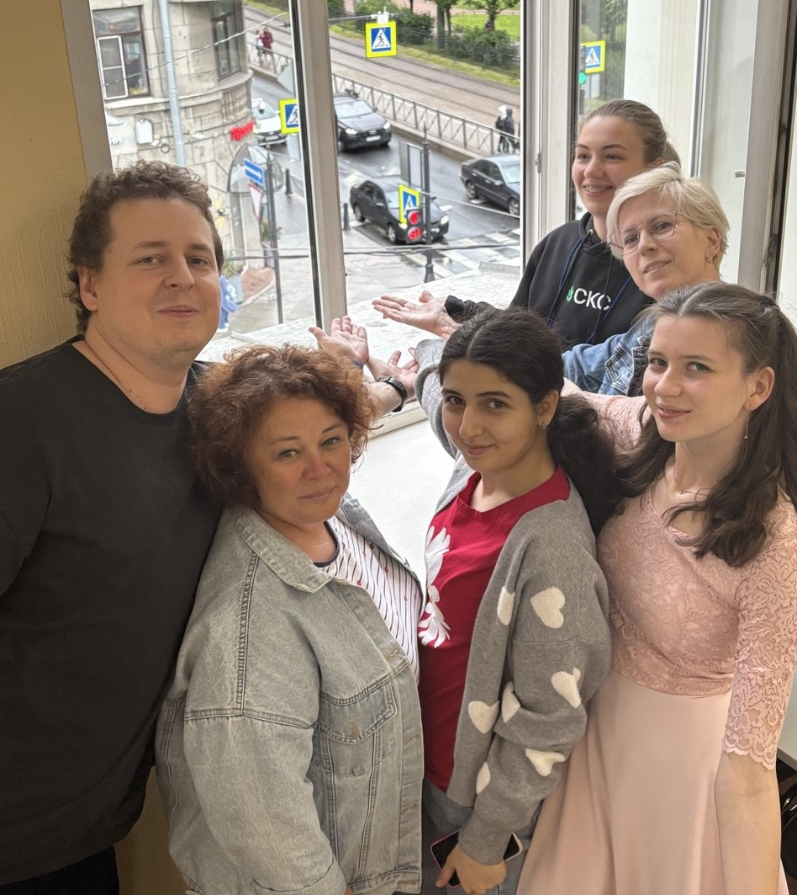

БММ 2025
мастерство устной геометрии
описание проекта
Устный экзамен — это не просто проверка знаний, а настоящее испытание на смелость и умение думать вслух!
В многих профильных школах ученики сталкиваются с серьезной задачей: сдать устный экзамен по геометрии, охватывающий три года обучения.
Но многие из них, привыкшие к тестам, теряются перед необходимостью говорить и доказывать.
Как помочь? Создать план подготовки и соответствующие учебные материалы, которые покажут,
как систематизировать материал, и научат уверенно излагать свои мысли.
Ведь каждый ученик достоин блестяще сдать экзамен!
математика
учебные задания
параллелограмм
параллелограмм PDF
прямоугольник PDF
рабочие листы
уравнение прямой
описанный четырёхугольник
вписанный четырёхугольник
другие материалы
рекомендации по составлению плана подготовки PNG
план подготовки
комбо-карточка
психология
материалы для семинара по мотивации PDF
Тест. Определи тип мышления
кто разработал?
математика – Жанна, Ирина, Виктория, Диана, Дарья
психология, сайт – Лида, Лёша

{kind=link}